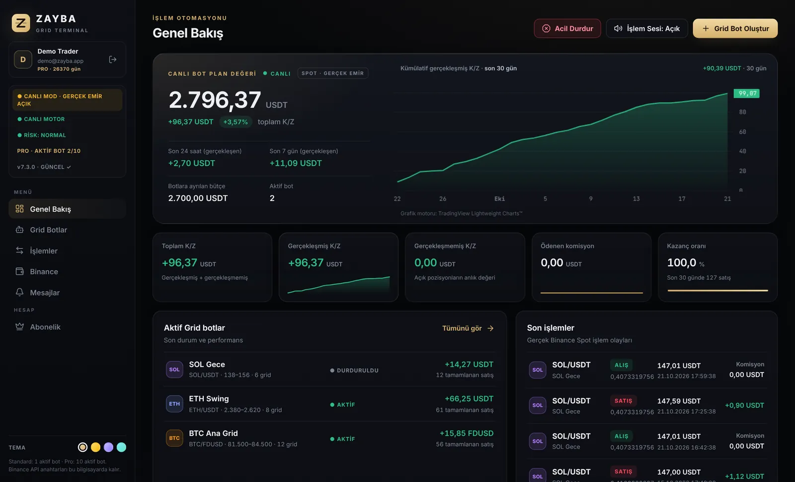

Windows · Binance Spot
Grid emirleriniz için masaüstü terminali
Zayba Abyaz tarafından bireysel olarak hazırlanan BOTZAYBA şu an ücretsiz sunulmaktadır. Binance Spot hesabınızda kendi belirlediğiniz grid emirlerini kurun ve izleyin. API anahtarı ve gizli anahtar Windows DPAPI ile bu bilgisayarda şifreli saklanır; uygulama bunları Binance bağlantısı için yerel olarak kullanır.
Güncel sürüm kontrol ediliyor…

Özellikler
Gerçek emir, net kontrol
ZAYBA, etkinleştirildiğinde kullanıcının Binance Spot hesabına API üzerinden gerçek limit emirleri gönderir. Varlıklar Binance hesabında kalır; ZAYBA kullanıcı fonlarını tutan bir hesap veya borsa değildir.
Kurulum
Üç adımda hazır
Kurulum için internet bağlantısı ve ücretsiz ZAYBA hesabı gerekir. Bot başlatma yetkisi hesap ve cihaz erişimine, ayrıca teknik bot sınırına bağlıdır. Bu sürüm için ücret alınmaz.
Bu sürümde neler var
Windows güvenlik uyarısı
SmartScreen uyarısı çıkarsa korumayı aşmayın. İndirme adresini ve yayımlanan SHA-256 değerini kontrol edin; yayıncı imzası doğrulanamıyorsa dosyayı çalıştırmayın ve destek e-postasına yazın.Kripto varlık işlemleri yüksek risk taşır; sermayenizin bir kısmını veya tamamını kaybedebilirsiniz. ZAYBA getiri vaat etmez. Bu yazılım kişiye özel yatırım tavsiyesi veya portföy yönetimi sunmaz. Başlatmadan önce emirleri, açık emirleri ve hesabınızdaki sonuçları kendiniz kontrol edin.
Şeffaflık
Hesap, veri ve işlem akışı
ZAYBA bir Windows masaüstü yazılımıdır. Botu başlattığınızda emirler sizin Binance hesabınızda ve sizin API anahtarınızla çalışır. ZAYBA kullanıcı varlıklarını saklamaz. Bu açıklama, hizmetin mevzuat kapsamını tek başına belirlemez.
Binance API anahtarı ve gizli anahtar Windows DPAPI ile yerel uygulama verisinde şifrelenir. ZAYBA hesabı, e-posta, cihaz kimliği/adı ve teknik erişim/plan bilgileri Supabase bulut altyapısında işlenir. Bot ayarları, yerel oturum ve işlem geçmişi bu bilgisayardaki uygulama veritabanında tutulur. Binance API anahtarınızı ZAYBA destek ekibine göndermeyin.
Emirler ve iptal talepleri ağ, borsa veya cihaz sorunları nedeniyle başarısız olabilir. Durdurma düğmesinden sonra Binance hesabınızda açık emir kalmadığını ayrıca doğrulayın. Ekran görüntülerindeki örnek veriler gerçek getiri göstergesi değildir.
Gizlilik ve veri uygulamaları · Risk açıklaması · Kullanım koşulları